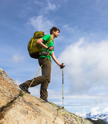
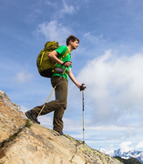
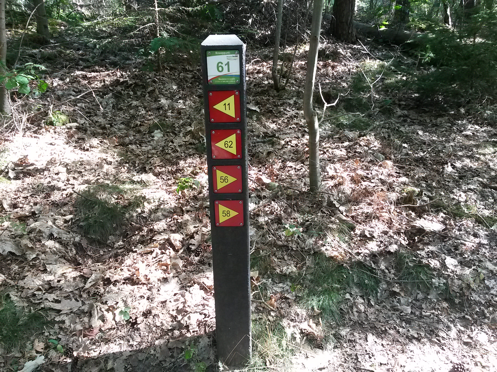
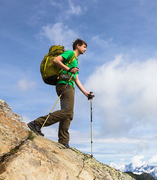

Lopen doe je op twee benen. Je gaat lopend ergens naar toe, bijvoorbeeld naar de winkel, naar school, naar de bibliotheek of naar de bushalte. Wandelen is ook lopen, maar dan voor je plezier. Als je wandelt, wil je onderweg iets zien of ervaren.
Wandelen wordt ook vaak als sport beoefend, waarbij vaak snelheid en afgelegde afstand belangrijk zijn. In Nederland worden veel wandeltochten georganiseerd. Zo is er in Nijmegen de Vierdaagse en in Heythuysen de Wandel 4-daagse.
|
 |
Veel wandelroutes zijn te vinden op internet of in speciale boekjes.
Vaak is een wandelpad gemarkeerd met paaltjes of andere tekens.
Er zijn korte wandelroutes, maar ook lange-afstandspaden zoals het
Pieterpad (429 km) van Maastricht tot Pieterburen in Groningen
of het Pelgrimspad naar Santiago de Compostela.
In de buurt van Heythuysen zijn er mooie routes vanaf boscafe
'De Busjop' en vanaf het 'Leudalmuseum'.
In Nederland en Belgie kun je een wandeling maken langs 'knooppunten' die in een netwerk met elkaar verbonden zijn. Je loopt zo ver als wilt van het ene naar het andere knooppunt. |
| Als je vaak en ver wandelt heb je stevige wandelschoenen nodig. Goede (regen)kleding is ook belangrijk. Misschien gebruik je ook een wandelstok. Vaak zie je wandelaars met twee stokken lopen. |

|